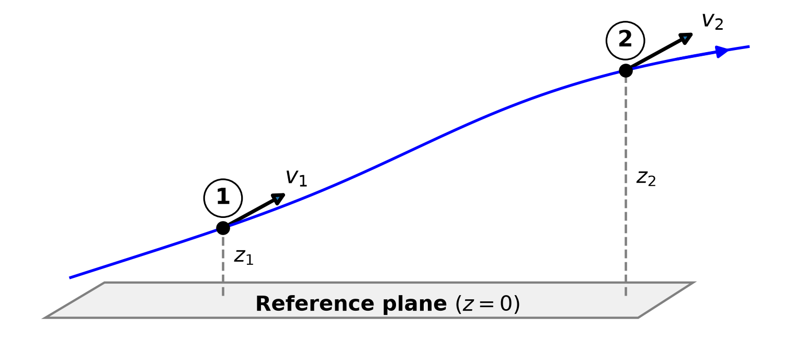
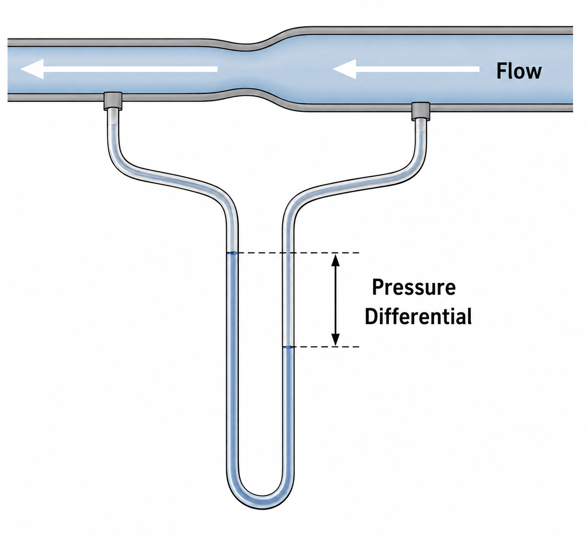
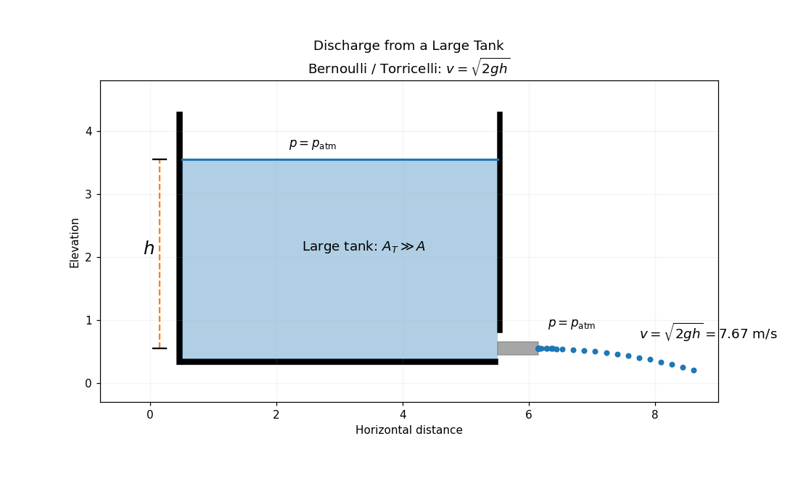
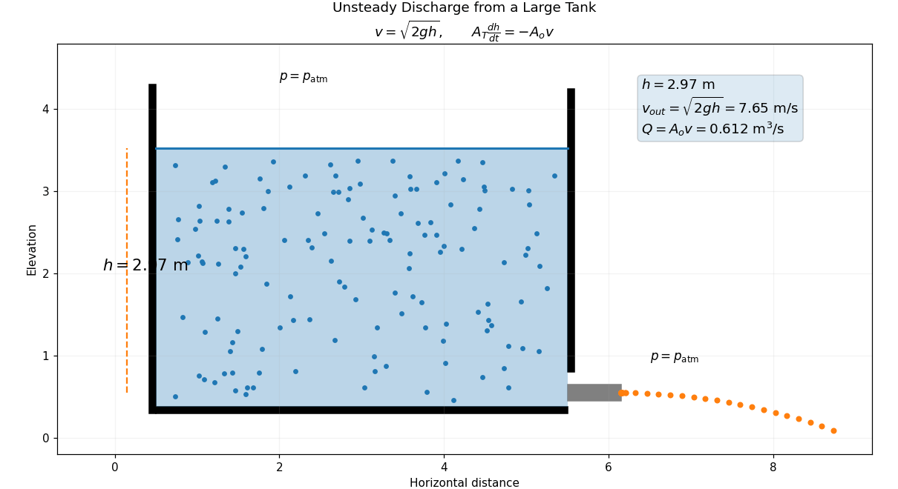
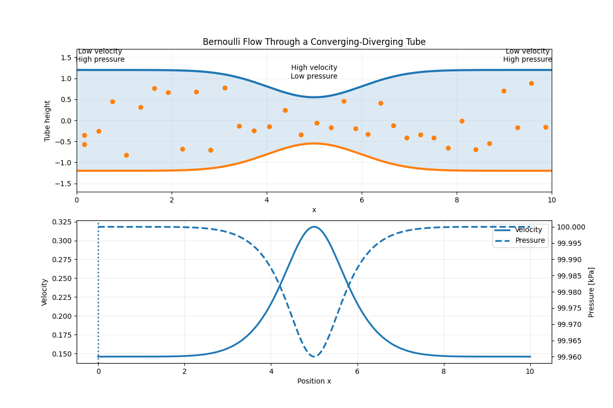
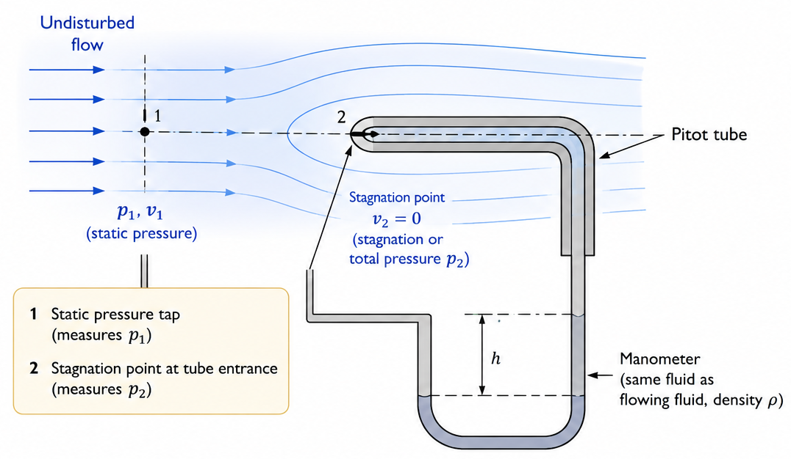
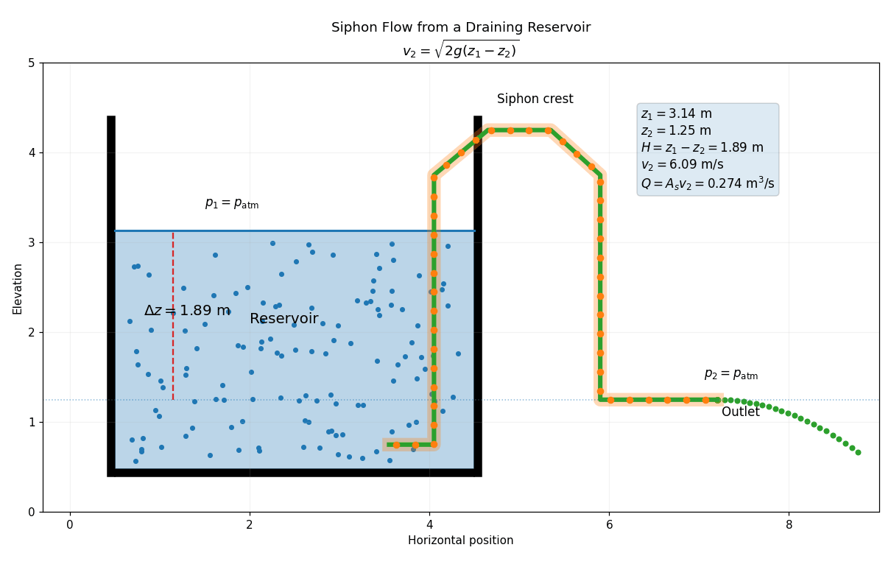

Lecture 5 — Mechanics of Incompressible Newtonian Fluids (Continued)
MATH3001(5005) — Applied Mathematical Modelling (Topics)
Prof. Benchawan Wiwatanapataphee
Curtin University
25 Aug 2026
Goals today:
- Reynolds Number and Dynamic Similarity
4.1. Proof of the Dimensionless N-S Equations
4.2. Physical Interpretation - Laminar Flow and Turbulent Flow
- Irrotational Flow
- Bernoulli’s Equation
7.1. Physical Interpretation
7.2. Assumptions and Limitations
7.3. Applications
7.4. Extended Bernoulli’s Equation
5.4 Reynolds Number and Dynamic Similarity
We now express the N-S equations and the continuity equation in dimensionless form to generalise the problem and simplify the analysis.
Firstly, we choose
- a characteristic velocity: \(V\)
- a characteristic length: \(L\)
Example 1: For flow through a tube, the mean flow speed may be chosen as \(V,\) and the tube diameter may be chosen as \(L\).
Example 2: For the flow of air around an aircraft wing, the aircraft speed may be chosen as \(V,\) and the wing chord length may be chosen as \(L\).
Dimensionless Variables
\[ \begin{aligned} x_i^*=\frac{x_i}{L}, \quad v_i^*=\frac{v_i}{V}, \quad t^*=\frac{Vt}{L}, \quad p^*=\frac{p}{\rho V^2}, \quad X_i^*=\frac{LX_i}{V^2}. \end{aligned} \tag{1}\]
Spatial coord. velocity time normalised pressure body forces
Dimensionless Parameter (Reynolds number)
\[ \begin{aligned} R_n = \frac{\rho LV}{\mu}. \end{aligned} \tag{2}\]
- \(\rho\): fluid density
- \(L\): characteristic length (diameter of the tube, chord length of the wing, etc.)
- \(V\): characteristic velocity (mean flow speed, aircraft speed, etc.)
- \(\mu\): dynamic viscosity of the fluid
Using these dimensionless quantities, the N-S eqs and the continuity eq become
\[ \begin{aligned} \frac{Dv_i^*}{Dt^*} = -\frac{\partial p^*}{\partial x_i^*} + X_i^* + \frac{1}{R_n}\nabla^{*2}v_i^*, \end{aligned} \tag{3}\]
\[ \begin{aligned} \frac{\partial v_j^*}{\partial x_j^*} = 0. \end{aligned} \tag{4}\]
Here, differential operators \(D\) and \(\nabla\) are taken with respect to the dimensionless variables.
5.4.1 Proof of the Dimensionless N-S Equations
From (1),
\[ v_i=Vv_i^*, \qquad x_j=Lx_j^*, \qquad t=\frac{L}{V}t^*. \]
The material derivative is \(\quad\dfrac{Dv_i}{Dt}=\dfrac{\partial v_i}{\partial t}+v_j\dfrac{\partial v_i}{\partial x_j}.\)
For the time derivative, \(\qquad \dfrac{\partial v_i}{\partial t}=\dfrac{\partial(Vv_i^*)}{\partial t}=V\dfrac{\partial v_i^*}{\partial t^*}\dfrac{\partial t^*}{\partial t}.\)
Since \(\quad t^*=\dfrac{Vt}{L},\)
we have \(\quad \dfrac{\partial t^*}{\partial t}=\dfrac{V}{L} \Longrightarrow \dfrac{\partial v_i}{\partial t}=\dfrac{V^2}{L}\dfrac{\partial v_i^*}{\partial t^*}.\)
For the convective acceleration term, \(\qquad v_j\dfrac{\partial v_i}{\partial x_j}=Vv_j^*\dfrac{\partial(Vv_i^*)}{\partial x_j}.\)
Since \(\quad x_j^*=\dfrac{x_j}{L},\)
we have \(\quad\dfrac{\partial}{\partial x_j}=\dfrac{1}{L}\dfrac{\partial}{\partial x_j^*} \Longrightarrow v_j\dfrac{\partial v_i}{\partial x_j}=\dfrac{V^2}{L}v_j^*\dfrac{\partial v_i^*}{\partial x_j^*}.\)
\[ \qquad\qquad \frac{Dv_i}{Dt} = \frac{V^2}{L} \left( \frac{\partial v_i^*}{\partial t^*} + v_j^* \frac{\partial v_i^*}{\partial x_j^*} \right) \]
\[ \Longrightarrow\; \frac{Dv_i}{Dt} = \frac{V^2}{L} \frac{Dv_i^*}{Dt^*}. \]
The Laplacian of velocity \((\nabla^2 v_i)\) is tranformed as \(\quad \nabla^2v_i=\dfrac{\partial^2v_i}{\partial x_j\partial x_j}.\)
Using \(\quad v_i=Vv_i^*,\quad x_j=Lx_j^*,\)
\[ \nabla^2v_i = \frac{V}{L^2} \nabla^{*2}v_i^*. \]
The pressure gradient \((\frac{\partial p}{\partial x_i})\) is scaled using (1) \(_4\) and transformed into
\[ \frac{\partial p}{\partial x_i} = \frac{\partial(\rho V^2p^*)}{\partial x_i} = \frac{\rho V^2}{L} \frac{\partial p^*}{\partial x_i^*}. \]
Substituting (1) \(_5\) into the dimensional N-S equation gives
\[ \frac{V^2}{L} \frac{Dv_i^*}{Dt^*} = -\frac{V^2}{L} \frac{\partial p^*}{\partial x_i^*} + \frac{V^2}{L}X_i^* + \frac{\mu}{\rho} \frac{V}{L^2} \nabla^{*2}v_i^*. \]
Multiplying through by \(L/V^2\),
\[ \frac{Dv_i^*}{Dt^*} = -\frac{\partial p^*}{\partial x_i^*} + X_i^* + \frac{\mu}{\rho VL} \nabla^{*2}v_i^*. \]
Since \(\qquad R_n=\dfrac{\rho VL}{\mu},\)
it follows that \(\qquad \dfrac{\mu}{\rho VL}=\dfrac{1}{R_n}.\)
\[ \Longrightarrow \frac{Dv_i^*}{Dt^*} = -\frac{\partial p^*}{\partial x_i^*} + X_i^* + \frac{1}{R_n}\nabla^{*2}v_i^*. \]
Similarly, the continuity equation becomes \(\qquad \dfrac{\partial v_j^*}{\partial x_j^*}=0.\)
The body force may be combined with the pressure term by introducing a modified dimensionless pressure
\[ \overline{p}^{\,*} = p^*-X_j^*x_j^*. \]
Then (3) becomes
\[ \frac{Dv_i^*}{Dt^*} = -\frac{\partial \overline{p}^{\,*}}{\partial x_i^*} + \frac{1}{R_n}\nabla^{*2}v_i^*. \]
The dimensionless equations are therefore completely determined by a single parameter, namely the Reynolds number.
5.4.2 Physical Interpretation
The Reynolds number expresses the ratio of inertial effects to viscous effects. \[ \frac{\text{inertial effect}}{\text{viscous effect}} = \frac{\rho V^2}{\mu V/L} = \frac{\rho VL}{\mu} = R_n. \]
In a fluid flow, inertial effects due to convective acceleration arise from terms of the order \(\rho u^2,\) whereas shear stresses arise from terms of the order \(\mu\frac{\partial u}{\partial y}.\)
- \(u\) is the characteristic velocity of the flow,
- \(\mu\) is the dynamic viscosity of the fluid, and
- \(\frac{\partial u}{\partial y}\) is the characteristic velocity gradient (rate of shear deformation).
Large \(R_n\): inertial effects dominate over viscous effects,
- which typically corresponds to rapid flow or turbulent flow.
Small \(R_n\): viscous effects dominate over inertial effects,
- which typically corresponds to slow flow or laminar flow.
5.5 Laminar Flows and Turbulent Flows
Laminar Flow
At a sufficiently large distance from the entrance, the individual fluid particles follow smooth paths parallel to the axis of the pipe.

Turbulent Flow
If the pipe is too large or the velocity is too high, the paths of individual particles are no longer smooth but are randomly oriented.

- Reynolds (1883) showed that flow in a circular pipe can be laminar or turbulent depending on the flow rate. He introduced the Reynolds number to characterise the transition, with a critical value of approximately \(R_c \approx 2300\) for a pipe flow.
- The flow is laminar if \(R_n < R_c\) and turbulent if \(R_n > R_c\).
Remarks
- Dynamic similarity
Consider two geometrically similar bodies immersed in moving fluids. The bodies have the same shape but different sizes, and their BCs are identical (no-slip).
Then, the two flows will be identical (in dimensionless variables) if the Reynolds numbers of the two flows are equal.
Thus, the Reynolds number is said to govern the dynamic similarity of the flow.
- As the governing eqs involve only one physical parameter, the behaviour of flow depends on the Reynolds number.
Turbulence
One of the most important and most difficult problems in classical physics.
It is also pretty common in nature, e.g.,
- the flow of water in rivers, the air around aircraft, the blood in arteries.
It is believed that the time-dependent, 3-D N-S eqs are capable of describing turbulent flows.
However, even modern supercomputers are not fast enough to solve these eqs directly for the required spatial and temporal scales.
Hence, turbulent motion is usually described in terms of time-averaged quantities.
- In practice, we usually classify fluid flows as steady/unsteady laminar flows and steady/unsteady turbulent flows.
Steady/unsteady Laminar Flows
- One in which at any given point,
- the velocity is independent of/(dependent on) time,
- and the flow field is determined in the sense that
- it can be reproduced precisely from one experiment to another.
Steady/unsteady Turbulent Flows
- One in which cannot be reproduced precisely from one experiment to another.
- The field variables are random functions of time.
- The terms steady and unsteady are used to describe the mean velocity.
The N-S eqs apply to both laminar and turbulent flows.
For turbulent flows, all velocity components are considered as random functions of time, and the N-S eqs must be solved in a statistical sense.
5.6 Irrotational Flow
A flow is said to be irrotational if the vorticity vanishes everywhere, that is,
\[ \nabla\times\mathbf{v} = \operatorname{curl}\mathbf{v} = \mathbf{0}. \tag{5}\]
For a 2-D flow, \(\mathbf{v}=(u,v,0),\) must satisfy the irrotationality condition
\[ \frac{\partial v}{\partial x} - \frac{\partial u}{\partial y} = 0. \tag{6}\]
If the fluid is incompressible, the velocity field must also satisfy the continuity eq
\[ \frac{\partial u}{\partial x} + \frac{\partial v}{\partial y} = 0. \tag{7}\]
Let \(\phi(x,y)\) be an arbitrary scalar function and define
\[ u = \frac{\partial\phi}{\partial y}, \qquad v = -\frac{\partial\phi}{\partial x}. \tag{8}\]
Then (7) is satisfied identically, and \(\phi\) is called the stream function.
\[ \frac{\partial u}{\partial x} + \frac{\partial v}{\partial y} = \frac{\partial^2\phi}{\partial x\partial y} - \frac{\partial^2\phi}{\partial y\partial x} = 0. \]
Substituting (8) into the irrotationality condition (6), we obtain the governing equation for the 2-D irrotational flow:
\[ \begin{aligned} \frac{\partial}{\partial x} \left( -\frac{\partial\phi}{\partial x} \right) - \frac{\partial}{\partial y} \left( \frac{\partial\phi}{\partial y} \right) = -\frac{\partial^2\phi}{\partial x^2} - \frac{\partial^2\phi}{\partial y^2} = \boxed{ \frac{\partial^2\phi}{\partial x^2} + \frac{\partial^2\phi}{\partial y^2} = 0}, \end{aligned} \tag{9}\]
which is a well-known Laplace’s equation.
For a 3-D irrotational flow, the velocity field must satisfy
\[ \begin{aligned} \frac{\partial u}{\partial y} - \frac{\partial v}{\partial x} = 0, \qquad \frac{\partial v}{\partial z} - \frac{\partial w}{\partial y} = 0, \qquad \frac{\partial w}{\partial x} - \frac{\partial u}{\partial z} = 0. \end{aligned} \tag{10}\]
These eqs are satisfied identically if the velocity components are derived from a velocity potential function \(\Phi(x,y,z)\) according to
\[ \begin{aligned} u = \frac{\partial\Phi}{\partial x}, \qquad v = \frac{\partial\Phi}{\partial y}, \qquad w = \frac{\partial\Phi}{\partial z}. \end{aligned} \tag{11}\]
If the fluid is also incompressible, then the continuity equation must hold:
\[ \begin{aligned} \frac{\partial u}{\partial x} + \frac{\partial v}{\partial y} + \frac{\partial w}{\partial z} = 0. \end{aligned} \tag{12}\]
Substituting (11) into (12) gives
\[ \frac{\partial^2\Phi}{\partial x^2} + \frac{\partial^2\Phi}{\partial y^2} + \frac{\partial^2\Phi}{\partial z^2} = 0. \tag{13}\]
Thus, the velocity potential satisfies Laplace’s equation. Since \(\Phi(x,y,z)\) is a potential function, (13) is also called the potential equation.
5.7 Bernoulli’s Equation
Bernoulli’s equation is an important consequence of the equations of motion for an inviscid fluid with \(\mu=0\).
It relates the pressure, velocity, and elevation of a fluid (height) particle as it moves through a flow field.

- Figure 1 demonstrates the conversion of pressure energy into kinetic energy.
- As the flow passes through the constricted section, the fluid velocity increases and the static pressure decreases.
- The resulting pressure difference is measured by a differential manometer.
- Bernoulli’s eq may be derived from the N-S eqs by neglecting viscous effects.
Equations of Motion for an Inviscid Fluid
The N-S eqs for an incompressible Newtonian fluid are
\[ \begin{aligned} \rho\frac{D\mathbf{v}}{Dt} = -\nabla p + \rho\mathbf{X} + \mu\nabla^2\mathbf{v}. \end{aligned} \tag{14}\]
For an inviscid fluid, \(\mu=0.\) Consequently, the equations of motion reduce to
\[ \begin{aligned} \rho\frac{D\mathbf{v}}{Dt} = -\nabla p + \rho\mathbf{X}. \end{aligned} \tag{15}\]
These equations are known as Euler’s equations of motion.
Dividing (15) by \(\rho\), we obtain
\[ \begin{aligned} \frac{D\mathbf{v}}{Dt} = -\frac{1}{\rho}\nabla p + \mathbf{X}. \end{aligned} \tag{16}\]
The material acceleration is
\[ \begin{aligned} \frac{D\mathbf{v}}{Dt} = \frac{\partial\mathbf{v}}{\partial t} + (\mathbf{v}\cdot\nabla)\mathbf{v}. \end{aligned} \]
Therefore, Euler’s equation may be written as
\[ \begin{aligned} \frac{\partial\mathbf{v}}{\partial t} + (\mathbf{v}\cdot\nabla)\mathbf{v} = -\frac{1}{\rho}\nabla p + \mathbf{X}. \end{aligned} \tag{17}\]
Conservative Body Forces
Suppose that the body force per unit mass is conservative. It may then be expressed as the negative gradient of a scalar potential \(\Phi\):
\[ \begin{aligned} \mathbf{X} = -\nabla\Phi. \end{aligned} \tag{18}\]
For gravity acting vertically downward, with \(z\) measured vertically upward, the gravitational body-force potential is
\[ \begin{aligned} \Phi=gz. \end{aligned} \tag{19}\]
Since \(\nabla(gz)=g\mathbf{e}_z,\)
\[ \mathbf{X} = -g\mathbf{e}_z. \]
Substitution into Euler’s equation (17) gives
\[ \begin{aligned} \frac{\partial\mathbf{v}}{\partial t} + (\mathbf{v}\cdot\nabla)\mathbf{v} = -\frac{1}{\rho}\nabla p - \nabla\Phi. \end{aligned} \tag{20}\]
Useful Vector Identity
The convective acceleration may be written using the vector identity
\[ \begin{aligned} (\mathbf{v}\cdot\nabla)\mathbf{v} = \nabla\left(\frac{1}{2}\mathbf{v}\cdot\mathbf{v}\right) - \mathbf{v}\times(\nabla\times\mathbf{v}). \end{aligned} \tag{21}\]
Since \(\mathbf{v}\cdot\mathbf{v}=v^2,\) where \(v=\lVert\mathbf{v}\rVert\), (21) becomes
\[ \begin{aligned} (\mathbf{v}\cdot\nabla)\mathbf{v} = \nabla\left(\frac{v^2}{2}\right) - \mathbf{v}\times\boldsymbol{\omega}, \end{aligned} \tag{22}\]
where \(\boldsymbol{\omega}=\nabla\times\mathbf{v}\) is the vorticity vector. Using this identity, (20) becomes
\[ \frac{\partial\mathbf{v}}{\partial t} + \nabla\left(\frac{v^2}{2}\right) - \mathbf{v}\times\boldsymbol{\omega} = -\frac{1}{\rho}\nabla p - \nabla\Phi. \] \[ \begin{aligned} \frac{\partial\mathbf{v}}{\partial t} - \mathbf{v}\times\boldsymbol{\omega} + \nabla\left( \frac{v^2}{2} + \Phi \right) + \frac{1}{\rho}\nabla p = \mathbf{0}. \end{aligned} \tag{23}\]
If the density is constant, then \(\quad \dfrac{1}{\rho}\nabla p=\nabla\left(\frac{p}{\rho}\right). \quad\) Hence,
\[ \begin{aligned} \frac{\partial\mathbf{v}}{\partial t} - \mathbf{v}\times\boldsymbol{\omega} + \nabla\left( \frac{p}{\rho} + \frac{v^2}{2} + \Omega \right) = \mathbf{0}. \end{aligned} \tag{24}\]
Derivation Along a Streamline
- Consider a fluid particle moving along a streamline from point 1 to point 2.
- The velocity of the particle at points 1 and 2 are \(v_1\) and \(v_2\), respectively, and
- the elevations of the points above a reference plane are \(z_1\) and \(z_2\), respectively.
For steady flow, \(\frac{\partial\mathbf{v}}{\partial t}=\mathbf{0}.\) (24) therefore reduces to
\[ -\mathbf{v}\times\boldsymbol{\omega} + \nabla\left( \frac{p}{\rho} + \frac{v^2}{2} + \Omega \right) = \mathbf{0}. \tag{25}\]
Let \(d\mathbf{r}\) be an infinitesimal displacement along a streamline. Since the velocity is tangent to a streamline,
\[ d\mathbf{r} = \mathbf{t}\,ds, \qquad \mathbf{v} = v\mathbf{t}, \tag{26}\]
where \(\mathbf{t}\) is the unit tangent vector and \(s\) is distance along the streamline.
Take the scalar product of (25) with \(d\mathbf{r}\):
\[ -\left( \mathbf{v}\times\boldsymbol{\omega} \right)\cdot d\mathbf{r} + \nabla\left( \frac{p}{\rho} + \frac{v^2}{2} + \Omega \right)\cdot d\mathbf{r} = 0. \]
Because \(d\mathbf{r}\) is parallel to \(\mathbf{v}\), \(\qquad \left(\mathbf{v}\times\boldsymbol{\omega}\right)\cdot d\mathbf{r}=0.\)
Therefore,
\[ \nabla\left( \frac{p}{\rho} + \frac{v^2}{2} + \Omega \right)\cdot d\mathbf{r} = 0. \]
Using \(df=\nabla f\cdot d\mathbf{r},\) we obtain
\[ d\left( \frac{p}{\rho} + \frac{v^2}{2} + \Omega \right) = 0. \tag{27}\]
For a gravitational body force, \(\Omega=gz,\) integrating (27) along a streamline gives
Bernoulli’s equation along a streamline
\[ \boxed{ \frac{p}{\rho} + \frac{v^2}{2} + gz = C }, \tag{28}\]
- \(p\): the static pressure at that point
- \(\rho\): the fluid density
- \(v\): the fluid flow speed at a point
- \(g\): the acceleration due to gravity
- \(z\): the elevation of the point above a reference plane
- \(C\): a constant along the streamline
Between point 1 and 2 on the same streamline,
\[ \boxed{ \frac{p_1}{\rho} + \frac{v_1^2}{2} + gz_1 = \frac{p_2}{\rho} + \frac{v_2^2}{2} + gz_2 } \tag{29}\]
Dividing (28) by \(g\) gives
Bernoulli’s equation in head form
\[ \boxed{ \frac{p}{\rho g} + \frac{v^2}{2g} + z = H }, \tag{30}\]
- \(p/\rho g\) is the pressure head.
- \(v^2/2g\) is the velocity head.
- \(z\) is the elevation head.
- \(H=C/g\) is the total head.
Thus,
\[ \text{total head} = \text{pressure head} + \text{velocity head} + \text{elevation head}. \]
Between two points on the same streamline,
\[ \frac{p_1}{\rho g} + \frac{v_1^2}{2g} + z_1 = \frac{p_2}{\rho g} + \frac{v_2^2}{2g} + z_2. \tag{31}\]
Alternative Derivation in Streamline Coordinates
Let \(s\) denote distance along the streamline.
For steady flow, the tangential component of acceleration is \(\quad a_s=v\dfrac{dv}{ds}.\)
The pressure force per unit mass in the streamline direction is \(-\dfrac{1}{\rho}\dfrac{dp}{ds}.\)
The component of gravitational acceleration in the streamline direction is \(-g\dfrac{dz}{ds}.\)
Euler’s equation in the streamline direction is therefore \(v\dfrac{dv}{ds}=-\dfrac{1}{\rho}\dfrac{dp}{ds}-g\dfrac{dz}{ds}.\)
Multiplying by \(ds, \qquad \qquad v\,dv+\dfrac{1}{\rho}\,dp+g\,dz=0.\)
For a fluid of constant density, integration gives \(\displaystyle\int v\,dv+\dfrac{1}{\rho}\displaystyle\int dp+g\displaystyle\int dz=0.\)
Hence, \(\hspace{9em}\dfrac{v^2}{2}+\dfrac{p}{\rho}+gz=C.\)
Irrotational Flow in the formed of Bernoulli’s Equation
For irrotational flow, \(\hspace{6em}\boldsymbol{\omega}=\nabla\times\mathbf{v}=\mathbf{0}.\)
(25) then becomes
\[ \nabla\left( \frac{p}{\rho} + \frac{v^2}{2} + \Phi \right) = \mathbf{0}. \]
Consequently,
\[ \frac{p}{\rho} + \frac{v^2}{2} + \Phi = C \tag{32}\]
For a rotational flow, \(C\) may differ from one streamline to another.
For an irrotational flow, \(C\) is the same throughout the connected fluid region.
For an irrotational flow under gravity, (28) holds at every point in the flow field.
General Barotropic Form
If the density is not constant but is a function of pressure alone, \(\rho=\rho(p),\) the pressure term may be integrated as \(\int\frac{dp}{\rho}.\)
Bernoulli’s equation:
\[ \boxed{ \int\frac{dp}{\rho} + \frac{v^2}{2} + \Phi = C }. \tag{33}\]
For an incompressible fluid, \(\rho\) is constant,
\[ \int\frac{dp}{\rho} = \frac{p}{\rho}. \]
5.7.1 Physical Interpretation
Bernoulli’s equation represents conservation of mechanical energy per unit mass.
\[ \boxed{\frac{p}{\rho} + \frac{v^2}{2} + gz = C} \]
The three terms have the dimensions of energy per unit mass:
- \(p/\rho\): the pressure energy per unit mass,
- \(v^2/2\): the kinetic energy per unit mass, and
- \(gz\): the gravitational potential energy per unit mass.
If no energy is added, removed, or lost due to friction, a fluid particle keeps the same total mechanical energy as it flows along a streamline.
Example: if the elevation remains constant \(z_1=z_2\), then \[ \frac{p_1}{\rho} + \frac{v_1^2}{2} = \frac{p_2}{\rho} + \frac{v_2^2}{2}. \]
An increase in speed is accompanied by a decrease in pressure.
5.7.2 Assumptions
Steady flow
The velocity at each fixed point is independent of time, \(\dfrac{\partial\mathbf{v}}{\partial t}=\mathbf{0}.\)
Inviscid flow
Viscous stresses and viscous energy dissipation are neglected, \(\mu=0.\)
The equation may also be used approximately in regions of a real flow where viscous effects are negligible.
Incompressible flow
The density \(\rho\) is constant. For a compressible barotropic fluid, the term \(p/\rho\) must be replaced by
\[ \int\frac{dp}{\rho}. \]
Conservative body forces
The body force must be derivable from a scalar potential:
\[ \mathbf{X} = -\nabla\Phi. \]
Gravity is the most common example.
Application along a streamline
For a rotational flow, Bernoulli’s equation applies between points on the same streamline. The constant \(C\) may vary from one streamline to another.
Irrotational-flow extension
If
\[ \nabla\times\mathbf{v} = \mathbf{0}, \]
the Bernoulli constant is the same for all streamlines in a connected flow region.
No mechanical-energy addition or removal
Between the two points under consideration, there must be no pump adding mechanical energy, no turbine removing mechanical energy, and no significant loss of mechanical energy due to friction.
5.7.2 Limitations
The simple Bernoulli equation should not be applied directly:
across a pump or turbine without including the associated energy transfer;
through a region with significant viscous losses;
between arbitrary streamlines in a rotational flow;
to strongly compressible flow while retaining the incompressible pressure term \(p/\rho\);
to an unsteady flow without including the appropriate unsteady contribution.
For real engineering flows, Bernoulli’s equation is often extended by adding terms representing pump head, turbine head, and head loss.
5.7.3 Applications of Bernoulli’s Equation
In practice, Bernoulli’s eq is usually used together with the continuity eq.
For steady incompressible flow through a stream tube,
\[ A_1v_1=A_2v_2=Q, \tag{34}\]
where \(Q\) is the volume flow rate.
A1: An orifice
A2: A contracting tube
A3: A Venturi meter
A4: A manometer
A5: A pitot tube
A6: A stagnation pressure
A7: A siphon flow
A8: A siphon pressure
A1: Discharge Through an Orifice: Torricelli’s Theorem
Consider a large reservoir containing an incompressible liquid. The liquid discharges through a small opening situated a vertical distance \(h\) below the free surface. Let point \(1\) be on the free surface and point \(2\) be at the opening.

Determine the theoretical discharge velocity \(v_2\) at the opening.
Applying Bernoulli’s equation between points \(1\) and \(2\), we have (31).
Both the free surface and the issuing jet are exposed to atmospheric pressure. Therefore,
\[ p_1=p_2=p_{\mathrm{atm}}. \]
If the reservoir cross-sectional area is very large compared with the area of the opening, the free-surface velocity is negligible: \(v_1\approx 0.\)
(31) therefore becomes \[ z_1 = \frac{v_2^2}{2g} + z_2. \]
Since \(h=z_1-z_2,\) we obtain \(\dfrac{v_2^2}{2g}=h.\)
Hence, the theoretical discharge velocity is
\[ \boxed{ v_2=\sqrt{2gh} }. \]
This result is known as Torricelli’s theorem.
Torricelli’s Theorem
The speed of efflux from a small opening is equal to the speed acquired by a body falling freely through a vertical distance \(h\).
The speed \(v\) of the fluid is
\[ v=\sqrt{2gh}, \]
- \(h\) is the vertical distance from the free surface to the center of the opening.
- \(g\) is the acceleration due to gravity.
If the opening has area \(A_2\), the theoretical volume flow rate is
\[ Q_{\mathrm{th}} = A_2\sqrt{2gh}. \]
For a real fluid, viscous effects and contraction of the jet reduce the actual flow rate. Then,
\[ Q = C_dA_2\sqrt{2gh}, \]
where \(C_d\) is the coefficient of discharge.


A2: Flow Through a Contracting Tube
Consider steady incompressible flow through a tube whose cross-sectional area changes from \(A_1\) to \(A_2\).

At section \(1\), the cross-sectional area is \(A_1\), the pressure is \(p_1\), and the mean velocity is \(v_1\). At section \(2\), the cross-sectional area is \(A_2\).
Determine the velocity and pressure at section \(2\).
The continuity equation gives
\[ A_1v_1=A_2v_2 \quad\Longrightarrow\quad v_2 = \frac{A_1}{A_2}v_1. \tag{35}\]
If \(A_2<A_1,\) then \(v_2>v_1.\)
For a horizontal tube, \(z_1=z_2.\) Bernoulli’s eq becomes
\[ \frac{p_1}{\rho} + \frac{v_1^2}{2} = \frac{p_2}{\rho} + \frac{v_2^2}{2} \]
\[ \Longrightarrow \quad p_1-p_2 = \frac{\rho}{2} \left( v_2^2-v_1^2 \right). \]
Since \(v_2>v_1\), it follows that \(p_2<p_1.\) Thus, in a horizontal inviscid flow, an increase in velocity is accompanied by a decrease in pressure.
Substitution of (35) gives
\[ \boxed{ p_2 = p_1 + \frac{\rho v_1^2}{2} \left[ 1- \left( \frac{A_1}{A_2} \right)^2 \right] }. \]
Thus, contraction of the flow passage causes the velocity to increase and the static pressure to decrease.
A3: The Venturi Meter
A Venturi meter is used to determine the flow rate through a pipe. It consists of a converging section, a narrow throat, and a diverging section.

Determine the flow rate \(Q\) through the Venturi meter in terms of the pressure difference \(\Delta p=p_1-p_2\) measured by a differential manometer.
Let \(A_1\) and \(A_2\) be the cross-sectional areas of the Venturi meter, which carries an incompressible liquid of density \(\rho\).
The continuity equation is
\[ A_1v_1=A_2v_2=Q \quad \Longrightarrow \quad v_1=\frac{Q}{A_1}, \; v_2=\frac{Q}{A_2}. \tag{36}\]
For a horizontal Venturi meter, Bernoulli’s equation gives
\[ \frac{p_1}{\rho} + \frac{v_1^2}{2} = \frac{p_2}{\rho} + \frac{v_2^2}{2} \tag{37}\]
\[ p_1-p_2 = \frac{\rho}{2} \left( v_2^2-v_1^2 \right) \]
Substituting \(v_1\) and \(v_2\) from (36) into the above equation gives
\[ p_1-p_2 = \frac{\rho Q^2}{2} \left( \frac{1}{A_2^2} - \frac{1}{A_1^2} \right) \]
\[ Q^2 = \frac{2(p_1-p_2)} {\rho \left( A_2^{-2}-A_1^{-2} \right)} \]
Taking the square root of both sides gives
\[ Q = \sqrt{ \frac{2(p_1-p_2)} {\rho \left( A_2^{-2}-A_1^{-2} \right)} } \]
An equivalent form is obtained by simplifying the denominator:
\[ \boxed{ Q = \frac{A_1A_2} {\sqrt{A_1^2-A_2^2}} \sqrt{ \frac{2(p_1-p_2)}{\rho} } }. \tag{38}\]
\[ \boxed{ Q = A_2 \sqrt{ \frac{2(p_1-p_2)} {\rho \left[ 1-\left(A_2/A_1\right)^2 \right]} } }. \tag{39}\]
For a real Venturi meter, the actual discharge is written as
\[ Q_{\mathrm{actual}} = C_d A_2 \sqrt{ \frac{2(p_1-p_2)} {\rho \left[ 1-\left(A_2/A_1\right)^2 \right]} }, \]
where \(C_d\) is the discharge coefficient.

A4: Pressure Difference Measured by a Manometer
From Figure 5, suppose the pressure difference between the two sections of a horizontal Venturi meter is measured by a differential manometer.
If the flowing fluid has density \(\rho\), the manometer liquid has density \(\rho_m\), and the difference between the manometer levels is \(h\), then
\[ p_1-p_2 = (\rho_m-\rho)gh. \tag{40}\]
Substitution into (39) gives
\[ Q = A_2 \sqrt{ \frac{ 2(\rho_m-\rho)gh }{ \rho \left[ 1-\left(A_2/A_1\right)^2 \right] } }. \tag{41}\]
Since
\[ \frac{\rho_m-\rho}{\rho} = \frac{\rho_m}{\rho}-1, \]
\[ \boxed{ Q = A_2 \sqrt{ \frac{ 2gh \left( \rho_m/\rho-1 \right) }{ 1-\left(A_2/A_1\right)^2 } } }. \tag{42}\]
A5: The Pitot Tube

If the two points are at the same elevation, Bernoulli’s equation gives
\[ \frac{p_1}{\rho} + \frac{v_1^2}{2} = \frac{p_2}{\rho} \quad \Longrightarrow \quad p_2-p_1 = \frac{1}{2}\rho v_1^2, \tag{43}\]
where \(p_1\) is the static pressure and \(p_2\) is the stagnation or total pressure. Then,
\[ \boxed{ v_1 = \sqrt{ \frac{2(p_2-p_1)}{\rho} } }, \tag{44}\]
or for a real Pitot tube,
\[ v_1 = C_p \sqrt{ \frac{2(p_2-p_1)}{\rho} }, \tag{45}\]
where \(C_p\) is the Pitot-tube coefficient.
If \(\Delta p\) is measured as a head \(h\) of the same fluid, then \(p_2-p_1=\rho gh.\)
Consequently,
\[ \boxed{ v_1=\sqrt{2gh} }. \]
A6: Stagnation Pressure
From Figure 6, the stagnation pressure is the pressure that would be attained if the fluid were brought to rest isentropically and without mechanical-energy loss.
For incompressible flow at constant elevation,
\[ p_0 = p+\frac{1}{2}\rho v^2, \tag{46}\]
where \(p_0\) is the stagnation pressure.
The quantity
\[ q=\frac{1}{2}\rho v^2 \]
is called the dynamic pressure.
Thus,
\[ \boxed{ p_0=p+q }. \tag{47}\]
A7: Siphon Flow

Let point 1 be at the free surface of the reservoir and point 2 be at the outlet, and assume that \(p_1=p_2=p_{\mathrm{atm}}\). Determine the velocity \(v_2\) at the outlet and the volume flow rate \(Q\) through the siphon.
Assume the reservoir is sufficiently large for \(v_1\approx 0.\)
Applying Bernoulli’s equation,
\[ \frac{p_{\mathrm{atm}}}{\rho g} + z_1 = \frac{p_{\mathrm{atm}}}{\rho g} + \frac{v_2^2}{2g} + z_2. \]
Therefore,
\[ \frac{v_2^2}{2g} = z_1-z_2. \]
Hence,
\[ \boxed{ v_2 = \sqrt{ 2g(z_1-z_2) } }. \tag{48}\]
If the tube has constant cross-sectional area \(A\), then the volume flow rate is
\[ \boxed{ Q = A\sqrt{ 2g(z_1-z_2) } }. \tag{49}\]
In a real siphon, viscous head losses reduce the velocity below the value predicted by (48).

A8: Pressure at the Highest Point of a Siphon

Determine the pressure \(p_3\) at the highest point assuming that the tube has constant cross-sectional area and that the flow is steady and inviscid \(v_3=v_2=v\).
Applying Bernoulli’s eq between the reservoir free surface and the highest point,
\[ \frac{p_{\mathrm{atm}}}{\rho g} + z_1 = \frac{p_3}{\rho g} + \frac{v^2}{2g} + z_3. \]
\[ \frac{p_3}{\rho g} = \frac{p_{\mathrm{atm}}}{\rho g} + z_1-z_3 - \frac{v^2}{2g}. \tag{50}\]
Using
\[ \frac{v^2}{2g}=z_1-z_2, \]
we obtain
\[ \frac{p_3}{\rho g} = \frac{p_{\mathrm{atm}}}{\rho g} + z_2-z_3. \]
\[ \boxed{ p_3 = p_{\mathrm{atm}} - \rho g(z_3-z_2) }. \tag{51}\]
The pressure at the highest point is therefore below atmospheric pressure.
The height of the siphon is limited because the absolute pressure must remain above the vapour pressure \(p_v\) of the liquid, i.e., \(p_3>p_v.\)
If the pressure falls to the vapour pressure, vaporisation or cavitation may occur and the siphon may cease to operate properly.
5.7.4 Extended Bernoulli Equation for Real Flows
For real-fluid flow between sections 1 and 2, Bernoulli’s eq may be extended to include mechanical-energy addition, mechanical-energy removal, and head loss: and head loss:
\[ \begin{aligned} \frac{p_1}{\rho g} + \frac{v_1^2}{2g} + z_1 + {\color{blue}{h_p}} = \frac{p_2}{\rho g} + \frac{v_2^2}{2g} + z_2 + {\color{blue}{h_t}} + {\color{blue}{h_L}}, \end{aligned} \tag{52}\]
- \(h_p\) is the head supplied by a pump,
- \(h_t\) is the head removed by a turbine, and
- \(h_L\) is the head loss caused by viscosity and fittings.
The simple Bernoulli equation is recovered when
\[ h_p=h_t=h_L=0. \]